论文题名与作者信息
青藏高原热力状况对夏季亚洲—太平洋涛动年际变率的可能影响
Possible Effect of the Thermal Condition of the Tibetan Plateau on the Interannual Variability of the Summer Asian–Pacific Oscillation
刘舸、赵平和陈军明
GE LIU, PING ZHAO, AND JUNMING CHEN
灾害天气国家重点实验室，中国气象科学研究院，北京；气象灾害预报预警与评估协同创新中心，南京信息工程大学，南京，中国
State Key Laboratory of Severe Weather, Chinese Academy of Meteorological Sciences, Beijing, and Collaborative Innovation Centre on Forecast and Evaluation of Meteorological Disasters, Nanjing University of Information Science and Technology, Nanjing, China
（稿件于2017年2月9日收到，2017年7月12日定稿）
(Manuscript received 9 February 2017, in final form 12 July 2017)
通信作者：赵平博士，zhaoping@camscma.cn
Corresponding author: Dr. Ping Zhao, zhaoping@camscma.cn
DOI：10.1175/JCLI-D-17-0079.1
DOI: 10.1175/JCLI-D-17-0079.1
摘要ABSTRACT
夏季（6—8月）亚洲—太平洋涛动（APO）是一种大尺度大气遥相关型，与北半球气候异常密切相关。
The summer (June–August) Asian–Pacific Oscillation (APO), a large-scale atmospheric teleconnection pattern, is closely associated with climate anomalies over the Northern Hemisphere.
本研究利用 NOAA/CIRES 20世纪再分析资料、ECMWF 20世纪大气再分析资料和 NCEP 再分析资料，考察夏季 APO 的年际变率及其与青藏高原（TP）热力状况的关系。
Using the NOAA/CIRES twentieth-century reanalysis, the ECMWF twentieth-century atmospheric reanalysis, and the NCEP reanalysis, this study investigates the variability of the summer APO on the interannual time scale and its relationship with the thermal condition over the Tibetan Plateau (TP).
结果表明，在过去100年中，APO 的年际变率一直与夏季青藏高原地表气温稳定相关。
The results show that the interannual variability of the APO is steadily related to the summer TP surface air temperature during the last 100 years.
观测和模拟结果进一步表明，青藏高原上的正加热异常可使亚洲上空的对流层上层温度升高、上升运动增强。
Observation and simulation further show that a positive heating anomaly over the TP can increase the upper-tropospheric temperature and upward motion over Asia.
这一异常上升气流在对流层上层向北移动，随后转向东移，最终在北太平洋中东部的中高纬度地区下沉，同时伴随北太平洋中东部低纬度地区的异常上升运动。
This anomalous upward flow moves northward in the upper troposphere, and then turns and moves eastward, before finally descending over the mid- to high latitudes of the central-eastern North Pacific, concurrently accompanied by anomalous upward motion over the lower latitudes of the central-eastern North Pacific.
北太平洋中东部的异常下沉和上升运动主要通过调节降水凝结潜热和/或干绝热加热，使当地对流层中上层温度降低，最终导致夏季 APO 的年际变率。
The anomalous downward and upward motions over the central-eastern North Pacific reduce the in situ mid- and upper-tropospheric temperature, mainly through modulating condensation latent heat from precipitation and/or dry adiabatic heat, which ultimately leads to the interannual variability of the summer APO.
在这一过程中，亚洲—北太平洋热带外区域的纬向垂直环流发挥了重要的桥梁作用。
In this process, the zonal vertical circulation over the extratropical Asian–North Pacific sector plays an important bridging role.
1. 引言1. Introduction
许多研究者已广泛研究亚洲与北太平洋大气环流系统之间的内在联系（例如，Kutzbach 1970；Kidson 1975；Wallace and Gutzler 1981；Barnston and Livezey 1987；Nitta 1987）。
The intrinsic relationships between the atmospheric circulation systems of Asia and the North Pacific have been extensively studied by many researchers (e.g., Kutzbach 1970; Kidson 1975; Wallace and Gutzler 1981; Barnston and Livezey 1987; Nitta 1987).
因此，人们已发现若干大气遥相关，如东亚—北美型（Lau 1992；Lau and Weng 2002）、西北太平洋—北美遥相关（Wang et al. 2001）、环球遥相关（Ding and Wang 2005）、亚洲—太平洋—美洲气候遥相关（Zhang et al. 2005）以及高层亚洲—北美遥相关（Zhu and Li 2016）；这些遥相关将亚洲、太平洋和北美洲的夏季气候异常联系起来。
Consequently, several atmospheric teleconnections, such as the East Asia–North America pattern (Lau 1992; Lau and Weng 2002), the western North Pacific–North America teleconnection (Wang et al. 2001), the circumglobal teleconnection (Ding and Wang 2005), the Asian–Pacific–American climate teleconnection (Zhang et al. 2005), and the upper-level Asia–North America teleconnection (Zhu and Li 2016), have been found to link the summer climate anomalies over Asia, the Pacific, and North America.
这些遥相关型加深了我们对北半球（NH）不同区域气候异常之间内在联系的理解。
These teleconnection patterns have deepened our understanding of the intrinsic relationships among climate anomalies over different regions of the Northern Hemisphere (NH).
其中，有两种占主导地位的热带—热带外遥相关（即环球遥相关和西太平洋—北美遥相关）调制北半球热带外地区的夏季气候变率；此外，它们通过将亚洲季风区的异常对流加热与北半球环流及相关气候异常连接起来，甚至产生全球影响（Ding and Wang 2005；Ding et al. 2011；Lee et al. 2011；Lee and Wang 2014；Lee and Ha 2015）。
Among them, there are two dominant tropical–extratropical teleconnections (i.e., the circumglobal teleconnection and the western Pacific–North America teleconnection) that modulate the summer climate variability over the extratropical NH; furthermore, they even have a global impact by connecting anomalous convective heating over the Asian monsoon area with the circulation of the NH and related climate anomalies (Ding and Wang 2005; Ding et al. 2011; Lee et al. 2011; Lee and Wang 2014; Lee and Ha 2015).
此外，若干耦合气候模式能够很好地再现这两种遥相关（Lee et al. 2011；Lee and Wang 2014），从而为北半球气候可预测性提供重要信号源。
Moreover, these two teleconnections can be reproduced well by several coupled climate models (Lee et al. 2011; Lee and Wang 2014), providing significant signal sources for climate predictability over the NH.
除上述两种占主导地位的遥相关外，还存在另一种连接半球尺度大气环流异常（Zhou and Wang 2015）并表征南亚、东亚和北美洲热带外地区夏季季风降水变率（Zhao et al. 2012b）的热带外大尺度遥相关型，即亚洲—太平洋涛动（APO）。
In addition to the above two dominant teleconnections, there is another extratropical large-scale teleconnection pattern that links atmospheric circulation anomalies on the hemispheric scale (Zhou and Wang 2015) and measures the variability of summer monsoon rainfall over South Asia, East Asia, and extratropical North America (Zhao et al. 2012b), and this is the Asian–Pacific Oscillation (APO).
许多模式已成功捕捉到 APO 及其相关气候异常（Zhao et al. 2012a；Chen et al. 2013；Y. Huang et al. 2013, 2014；Zhang et al. 2016；Zhou 2016；Wu and Chen 2016；Zhou et al. 2017；Zhou and Xu 2017a,b）。
The APO and associated climate anomalies have been successfully captured by many models (Zhao et al. 2012a; Chen et al. 2013; Y. Huang et al. 2013, 2014; Zhang et al. 2016; Zhou 2016; Wu and Chen 2016; Zhou et al. 2017; Zhou and Xu 2017a,b).
显然，APO 是影响东亚降水月尺度可预测性的一个重要因素（Chen et al. 2016）。
Evidently, the APO is an important factor affecting the monthly-scale predictability of East Asian precipitation (Chen et al. 2016).
若干研究表明，大气、海洋和陆地之间的复杂相互作用会改变亚洲和美洲季风的活动特征（Meehl 1994；Douville and Royer 1996；Yang and Lau 1998；Chen and Yoon 2000；Douville 2003；Misra 2008）。
Several studies have shown that complicated interactions among the atmosphere, ocean, and land modify the behaviors of the Asian and American monsoons (Meehl 1994; Douville and Royer 1996; Yang and Lau 1998; Chen and Yoon 2000; Douville 2003; Misra 2008).
在北半球夏季，作为北半球最重要热源之一的青藏高原（TP）高架热力作用在大气—海洋—陆地相互作用中发挥着突出作用。
During boreal summer, the elevated heating of the Tibetan Plateau (TP), one of the most important heat sources in the NH, plays a prominent role in atmosphere–ocean–land interactions.
例如，青藏高原的加热异常会影响亚洲上空的大气环流和降水（例如，Zhao and Chen 2001a,b；Duan and Wu 2005；Wang et al. 2008；Liu et al. 2012；Wu and Liu 2016），甚至影响北半球更大尺度的大气环流和气候（例如，Ose 1996；Zhao et al. 2007；Nan et al. 2009；Zhou et al. 2009）。
For example, the heating anomalies of the TP affect atmospheric circulation and precipitation over Asia (e.g., Zhao and Chen 2001a,b; Duan and Wu 2005; Wang et al. 2008; Liu et al. 2012; Wu and Liu 2016) and even the larger-scale atmospheric circulation and climate over the NH (e.g., Ose 1996; Zhao et al. 2007; Nan et al. 2009; Zhou et al. 2009).
一些研究表明，夏季 APO 的年际变率可受到青藏高原加热异常的调制（Nan et al. 2009；Zhou et al. 2009；Liu et al. 2015）。
Some studies have shown that the interannual variability of the summer APO can be modulated by the TP’s heating anomalies (Nan et al. 2009; Zhou et al. 2009; Liu et al. 2015).
然而，这些研究尚未详细阐明青藏高原加热影响 APO 所涉及的物理过程。
However, these studies have not clarified in detail the physical processes involved in the effect of TP heating on the APO.
此外，季风气候与海洋/陆地强迫之间的年际关系并不稳定（Bamzai and Shukla 1999；Kumar et al. 1999；Wang 2002；Wu et al. 2014）。
Moreover, the interannual relationships between monsoon climates and ocean/land forcing are not stable (Bamzai and Shukla 1999; Kumar et al. 1999; Wang 2002; Wu et al. 2014).
例如，ENSO 与亚洲夏季风之间的关系在年代际时间尺度上明显不稳定（Kumar et al. 1999；Wang 2002）。
For example, the relationship between ENSO and the Asian summer monsoons is clearly unstable on the decadal time scale (Kumar et al. 1999; Wang 2002).
中国东北夏季气温异常、当地春季积雪异常以及春季北大西洋海表温度（SST）异常三者之间的年际关系也存在年代际变化（Wu et al. 2014）。
Decadal change has also been found in the interannual relationship between the summer air temperature anomaly over northeast China, the spring snow-cover anomaly in situ, and the spring North Atlantic sea surface temperature (SST) anomaly (Wu et al. 2014).
此外，ENSO 与印度夏季风之间的负相关关系在近几十年已经中断（Wang et al. 2015）。
Also, an inverse correlation between ENSO and the Indian summer monsoon has broken down during recent decades (Wang et al. 2015).
因此，有必要利用长期资料研究夏季 APO 的年际变率及其相关机制。
Therefore, it is necessary to investigate the interannual variability of the summer APO and associated mechanisms using long-term data.
本研究利用长期资料分析和气候模拟，考察夏季 APO 与青藏高原热力状况之间的年际关系及其相关物理机制。
The present study investigates the interannual relationship between the summer APO and the thermodynamic condition of the TP, along with the associated physical mechanisms, by using long-term data analyses and climate simulations.
第2节介绍资料和方法，随后第3节考察夏季 APO 的年际变率及其与青藏高原热力状况的关系。
The datasets and methods are described in section 2, and then the interannual variability of the summer APO and its relationship with the thermal condition of the TP is examined in section 3.
第4节给出这一关系的物理解释，第5节为总结与讨论。
A physical explanation for this relationship is given in section 4, followed by a summary and discussion in section 5.
2. 资料、方法和模式2. Data, methods, and models
本研究使用1871—2012年的逐月美国国家海洋和大气管理局（NOAA）/环境科学合作研究所（CIRES）20世纪再分析资料V2（NOAA-20C；Compo et al. 2011）。
This study utilizes the monthly National Oceanic and Atmospheric Administration (NOAA)/Cooperative Institute for Research in Environmental Sciences (CIRES) Twentieth Century Reanalysis V2 product (NOAA-20C; Compo et al. 2011) during 1871–2012.
若干研究已表明，该再分析资料可成功用于研究亚洲和太平洋上空的大气环流与气候（例如，Cao et al. 2012；Chowdary et al. 2012；Krishnamurthy and Krishnamurthy 2014），以及 APO 的长期变率（Zhao et al. 2012b）。
Several studies have demonstrated that this reanalysis dataset can be successfully applied to studying atmospheric circulation and climate over Asia and the Pacific (e.g., Cao et al. 2012; Chowdary et al. 2012; Krishnamurthy and Krishnamurthy 2014), as well as the long-term variability of the APO (Zhao et al. 2012b).
此外，我们使用1900—2010年的欧洲中期天气预报中心（ECMWF）20世纪大气再分析资料（ERA-20C；Poli et al. 2013）、1948—2015年的美国国家环境预报中心（NCEP）再分析资料（Kalnay et al. 1996），以及耦合模式比较计划第5阶段（CMIP5）中美国国家大气研究中心群落气候系统模式第4版（CCSM4）的输出，以评估 NOAA-20C 结果的稳健性。
Additionally, we use the European Centre for Medium-Range Weather Forecasts (ECMWF) twentieth-century atmospheric reanalysis (ERA-20C) during 1900–2010 (Poli et al. 2013), the National Centers for Environmental Prediction (NCEP) reanalysis during 1948–2015 (Kalnay et al. 1996), and phase 5 of the Coupled Model Intercomparison Project (CMIP5) output from the NCAR Community Climate System Model, version 4 (CCSM4), to assess the robustness of the results from NOAA-20C.
本研究使用的该模式输出来自其历史模拟，该模拟以1870—2006年观测得到的人为强迫和自然强迫为基础（更多详情见 https://esgf-node.llnl.gov/search/cmip5/）。
The output of this model used in this study is from its historical simulation, based on the observational anthropogenic and natural forcing from 1870 to 2006 (see https://esgf-node.llnl.gov/search/cmip5/ for further details).
由于本文关注年际时间尺度，我们通过10年高通 Lanczos 滤波（Duchon 1979）从原始变量中提取年际分量。
Because our focus here is on the interannual time scale, we extract the interannual components from the original variables via 10-yr high-pass Lanczos filtering (Duchon 1979).
此外还采用经验正交函数（EOF；Kundu and Allen 1976）、相关、合成和回归分析方法；除非另有说明，相关系数的统计显著性均使用 Student t 检验评估。
The empirical orthogonal function (EOF) (Kundu and Allen 1976), correlation, composite, and regression analysis methods are also employed and, unless otherwise stated, the statistical significance of correlation coefficients is assessed using the Student’s t test.
美国国家大气研究中心群落气候系统模式第3版（CCSM3）包含大气分量、海洋分量（Smith and Gent 2002）、陆面模式（Bonan et al. 2002）和海冰模式（Bitz et al. 2001），本研究使用该模式考察夏季青藏高原高架热力作用对 APO 的影响。
The NCAR Community Climate System Model, version 3 (CCSM3), which includes an atmospheric component, an oceanic component (Smith and Gent 2002), a land model (Bonan et al. 2002), and a sea ice model (Bitz et al. 2001), is employed to investigate the impact of the TP elevated heating on the APO during summer.
先前一项研究表明，CCSM3 能够成功模拟亚洲陆地加热对亚洲—太平洋气候的影响（Zhao et al. 2011）。
A previous study showed that CCSM3 can successfully simulate the impacts of Asian land heating on the Asian–Pacific climate (Zhao et al. 2011).
本研究使用原始 CCSM3 开展一个“自由运行”试验，称为 CCSM3-Control，并开展一个敏感性试验，以考察夏季青藏高原高架热力作用对 APO 的可能影响，该试验称为 CCSM3-TP。
In this study, we perform a “free run” experiment using the original CCSM3, referred to as CCSM3-Control, and a sensitivity experiment to examine the possible impact of TP elevated heating on the APO during summer (referred to as CCSM3-TP).
CCSM3-TP 的设置与 CCSM3-Control 相同，唯一的例外是将青藏高原区域海拔3000 m以上的地形高度降低50%。
The configuration in CCSM3-TP is the same as that in CCSM3-Control, except with a 50% reduction in the topographic height over the TP region above 3000 m.
每个试验中，CCSM3 均积分100年，并分析最后50年的输出。
For each experiment, the CCSM3 model is integrated for 100 years and the outputs for the last 50 years are analyzed.
此外，为分离青藏高原热力强迫的单独作用，我们使用规定逐月 SST 的美国国家大气研究中心群落大气模式第3版（CAM3；Collins et al. 2004），通过改变地表植被分别开展两个数值试验（CAM3-Tree 和 CAM3-Bare）。
Furthermore, to isolate the individual effect of the TP thermal forcing, we use the NCAR Community Atmosphere Model, version 3 (CAM3), with prescribed monthly SST (Collins et al. 2004), to perform two numerical experiments with altered surface vegetation (CAM3-Tree and CAM3-Bare, respectively).
按照 Zhao et al.（2012a, 2016），在 CAM3-Tree 中，青藏高原区域内地形高度超过1500 m的每个网格，其地表植被类型均设置为地表反照率较低的“热带常绿阔叶树”。
Following Zhao et al. (2012a, 2016), in CAM3-Tree, the surface vegetation type in each grid with a topographic height above 1500 m over the TP region is set to “broadleaf evergreen tropical tree,” which has a low surface albedo.
在 CAM3-Bare 中，同一区域的地表植被类型设置为“裸土”，其地表反照率高于 CAM3-Tree 中的设置。
In CAM3-Bare, the surface vegetation type over the same region is set to “bare soil,” which has a higher surface albedo than the configuration in CAM3-Tree.
需要指出的是，由于两个试验均采用规定的逐月 SST，因此排除了海—气相互作用的反馈。
It should be noted that the feedback of ocean–atmosphere interactions is excluded because of prescribed monthly SST in both experiments.
开展这两个试验的目的是利用其结果之差揭示青藏高原热力强迫的单独作用。
The aim in conducting these two experiments is that the difference between their results will reveal the individual effect of the TP thermal forcing.
在两个试验中，CAM3 均积分20年，并使用最后15年的数值进行分析。
In both experiments, CAM3 is integrated for 20 years, and the values from the last 15 years are used for analysis.
图 1FIG. 1
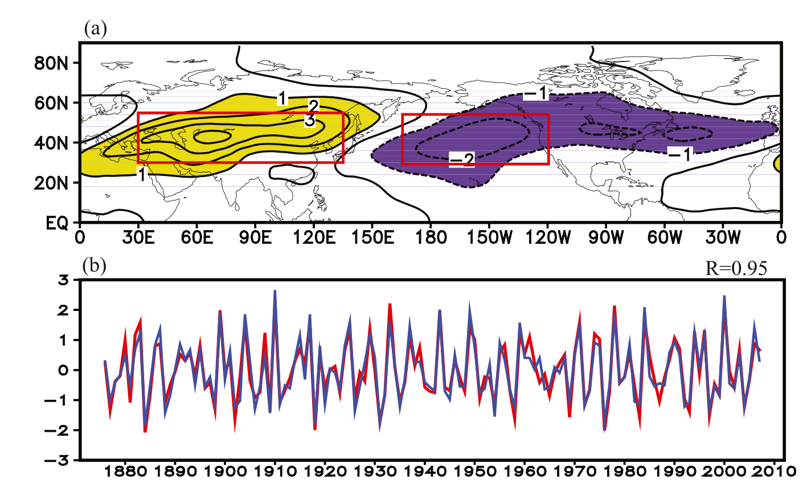
图1。（a）1871—2012年夏季对流层上层（300–200 hPa）涡动温度（T′）异常年际分量的 EOF1（×0.01），其中 T′ 的年际分量通过10年高通滤波获得。
FIG. 1. (a) EOF1 (×0.01) of interannual components of summer upper-tropospheric (300–200 hPa) eddy temperature (T′) anomalies during 1871–2012, in which the interannual components of T′ are obtained by 10-yr high-pass filtering.
大于1（小于−1）的正（负）值加阴影。
Positive (negative) values larger (smaller) than 1 (−1) are shaded.
（b）EOF1 主成分（红线）和 APO 指数（蓝线）的标准化时间序列；APO 指数通过欧亚区域与太平洋区域之间 T′ 的算术差计算，这两个区域分别由（a）中的两个红框表示。
(b) Normalized time series of the principal component of EOF1 (red line) and the APO index (blue line) calculated through an arithmetic difference in T′ between the Eurasian and Pacific regions, in which the two regions are represented by two red boxes in (a), respectively.
3. 夏季 APO 的年际变率及其与青藏高原热力状况的关系3. Interannual variability of the summer APO and its relationship with the thermal condition of the TP
遵循 Zhao et al. (2012b)，我们使用 1871–2012 年的 NOAA-20C，对整个北半球夏季（6–8 月）对流层上层（300–200 hPa）涡动温度（T′）异常的年际分量进行经验正交函数（EOF）分析，其中 T′ 定义为温度相对于全球纬向平均的偏差。
Following Zhao et al. (2012b), we perform an EOF analysis of the interannual component of the summer (June–August) upper-tropospheric (300–200 hPa) eddy temperature (T′) anomaly over the entire NH using NOAA-20C for the period 1871–2012, in which T′ is defined as the deviation of temperature from the global zonal mean.
第一 EOF 模态（EOF1）解释了该再分析资料年际分量总方差的 17%，经 1000 次蒙特卡洛模拟检验，在 99% 置信水平上显著（Besag and Clifford 1989）。
The leading EOF mode (EOF1) accounts for 17% of the total variance for the interannual component of the reanalysis dataset, significant at the 99% confidence level through 1000 Monte Carlo simulations (Besag and Clifford 1989).
同时，根据 North et al. (1982) 的判据，EOF1 与其他模态显著可区分。
Meanwhile, EOF1 is found to be significantly distinct from the other modes, based on the criterion of North et al. (1982).
EOF1 呈现欧亚大陆与太平洋—大西洋区域之间的热带外反相变化，表明在过去 100 年的年际时间尺度上存在清晰的 APO 型（Zhao et al. 2012b）。
EOF1 displays an extratropical out-of-phase variation between Eurasia and the Pacific–Atlantic region, indicating a clear APO pattern (Zhao et al. 2012b) on the interannual time scale during the last 100 years.
为方便起见，欧亚大陆及北太平洋西部（30°–55°N，30°–135°E）与北太平洋中东部（30°–55°N，165°E–120°W）的 T′ 年际分量区域平均值（图 1a 中两个红框所示），分别称为欧亚 T′ 指数和太平洋 T′ 指数。
For convenience, the regional mean values of the T′ interannual components over Eurasia and the western North Pacific (30°–55°N, 30°–135°E) and the central-eastern North Pacific (30°–55°N, 165°E–120°W) (indicated by two red boxes in Fig. 1a) are referred to as the Eurasian and Pacific T′ indices, respectively.
APO 指数直接由欧亚 T′ 指数与太平洋 T′ 指数之差计算得到。
The APO index is calculated simply through the arithmetic difference between the Eurasian and Pacific T′ indices.
该 APO 指数与 EOF1 的主成分（见图 1b）变化一致，二者的相关系数为 0.95，在 99.9% 置信水平上显著。
This APO index shows a consistent variation with the principal component of EOF1 (shown in Fig. 1b), with a correlation coefficient of 0.95, significant at the 99.9% confidence level.
因此，欧亚 T′ 指数与太平洋 T′ 指数之差能够很好地表征夏季 APO 的年际变率，故将其定义为 APO 指数。
Thus, the difference between the Eurasian and Pacific T′ indices can represent the interannual variability of the summer APO well, and is defined as the APO index.
图 2FIG. 2
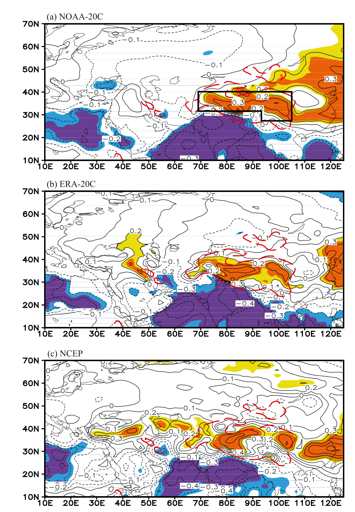
图 2。（a）1871–2012 年夏季 APO 指数与同期地表气温之间的相关系数分布，其中相关分析基于 NOAA-20C 再分析资料。
FIG. 2. (a) Distribution of correlation coefficients between the summer APO index and simultaneous surface air temperature during 1871–2012, in which the correlation is based on NOAA-20C reanalysis data.
（b）、（c）同（a），但分别为 1900–2010 年 ERA-20C 和 1948–2015 年 NCEP 的结果。
(b),(c) As in (a), but for ERA-20C during 1900–2010 and NCEP during 1948–2015, respectively.
黄色和橙色（浅蓝色和深蓝色）阴影分别表示在 95% 和 99% 置信水平上显著的正（负）相关。
Yellow and orange (light and dark blue) shading denotes positive (negative) correlations significant at the 95% and 99% confidence level, respectively.
（a）中的黑色矩形为青藏高原区域。
The black rectangle in (a) is the TP region.
红色虚线等值线表示海拔 1500 m 以上的区域。
Red dashed contours indicate the area over 1500 m.
图 2a 给出了 1871–2012 年夏季 APO 指数与同期 NOAA-20C 地表气温（SAT）之间的相关系数分布。
Figure 2a shows the distribution of the correlation coefficients between the summer APO index and the simultaneous surface air temperature (SAT) of NOAA-20C during 1871–2012.
图中，青藏高原区域和东亚热带外地区出现通过 95% 置信水平检验的显著正相关，青藏高原上的中心值大于 0.4，而青藏高原以南的热带地区则出现显著负相关。
In this figure, significant positive correlations above the 95% confidence level appear over the TP region and the extratropics of East Asia, with a central value (>0.4) over the TP, while significant negative correlations appear in the tropics to the south of the TP.
1900–2010 年 ERA-20C 资料中也观测到类似特征，青藏高原区域存在显著正相关（图 2b）。
A similar feature is also observed in the ERA-20C data during 1900–2010, with significant positive correlations over the TP region (Fig. 2b).
这些结果表明，在夏季年际时间尺度上，APO 与青藏高原热力状况密切相关。
These results indicate a close relationship between the APO and the TP thermal condition on the interannual time scale during summer.
为度量青藏高原热力状况的变率，参照图 2a，我们将青藏高原上（31°–40°N，69°–93°E 和 27°–40°N，93°–105°E）的区域平均 SAT 定义为青藏高原热力指数。
To measure the variability of the TP thermal condition, referring to Fig. 2a, we define the regional mean SAT over the TP (31°–40°N, 69°–93°E and 27°–40°N, 93°–105°E) as a TP thermal index.
图 3a 和图 3b 分别给出了基于 NOAA-20C 和 ERA-20C 再分析资料的夏季青藏高原热力指数与同期对流层上层（300–200 hPa）T′ 之间的相关。
Figures 3a and 3b show the correlation between the summer TP thermal index and the simultaneous upper-tropospheric (300–200 hPa) T′ according to the NOAA-20C and ERA-20C reanalysis datasets, respectively.
显而易见，欧亚大陆热带外大部分地区呈正相关，而北太平洋中东部热带外地区呈负相关，从而构成清晰的 APO 型。
It is apparent that there are positive correlations over most of the extratropical Eurasian continent and negative correlations over the extratropical central-eastern North Pacific, which constitutes a clear APO pattern.
相关分析表明，在 NOAA-20C 的 1871–2012 年期间，夏季青藏高原热力指数与 APO 指数的相关系数为 0.37（在 99.9% 置信水平上显著）；在 ERA-20C 的 1900–2010 年期间，相关系数为 0.39（在 99.9% 置信水平上显著）。
Correlation analysis reveals a correlation coefficient of 0.37 (significant at the 99.9% confidence level) between the summer TP and APO indices during 1871–2012 for NOAA-20C, and 0.39 (significant at the 99.9% confidence level) during 1900–2010 for ERA-20C.
这些结果支持 APO 与青藏高原 SAT 之间的联系。
These results support the link between the APO and TP SAT.
图 3FIG. 3
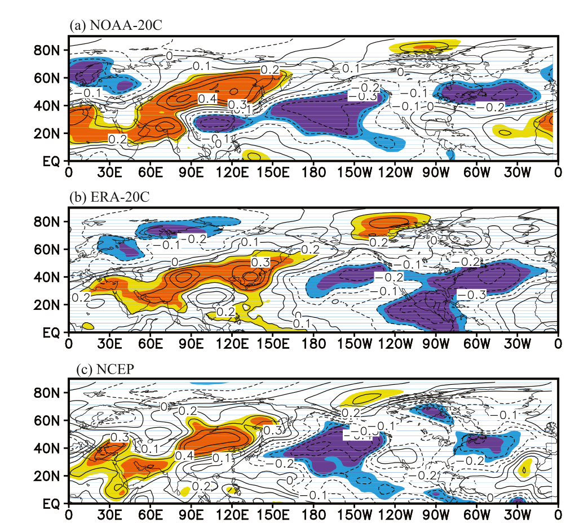
图 3。（a）1871–2012 年夏季青藏高原热力指数与同期对流层上层 T′ 之间的相关系数分布，其中相关分析基于 NOAA-20C 再分析资料。
FIG. 3. (a) Distribution of correlation coefficients between the summer TP thermal index and simultaneous upper-tropospheric T′ during 1871–2012, in which the correlation is based on NOAA-20C reanalysis data.
（b）、（c）同（a），但分别为 1900–2010 年 ERA-20C 和 1948–2015 年 NCEP 的结果。
(b),(c) As in (a), but for ERA-20C during 1900–2010 and NCEP during 1948–2015, respectively.
黄色和橙色（浅蓝色和深蓝色）阴影分别表示在 95% 和 99% 置信水平上显著的正（负）相关。
Yellow and orange (light and dark blue) shading denotes positive (negative) correlations significant at the 95% and 99% confidence level, respectively.
为进一步验证这一联系的稳健性，我们计算了 NOAA-20C 和 ERA-20C 再分析资料中夏季青藏高原热力指数与 APO 指数之间的 50 年滑动相关系数（图 4a、b）。
To further verify the robustness of this link, we calculate the 50-yr running correlation coefficient between the summer TP and APO indices for the NOAA-20C and ERA-20C reanalysis datasets (Figs. 4a,b).
图 4FIG. 4
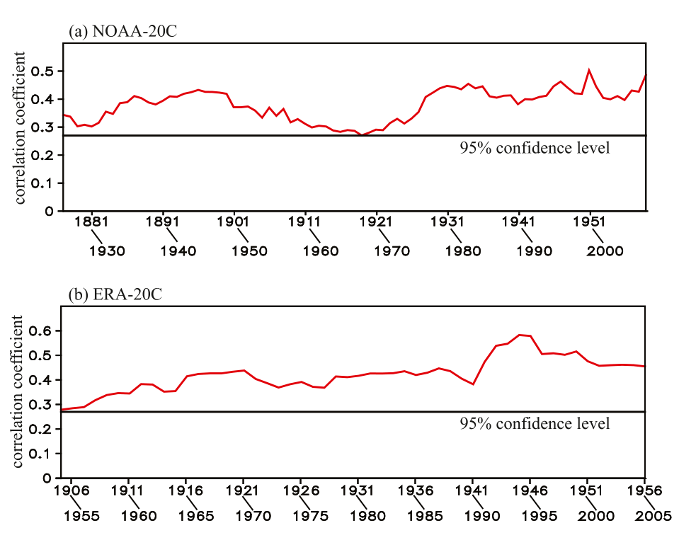
图 4。（a）1871–2012 年夏季青藏高原热力指数与 APO 指数之间的 50 年滑动相关系数，其中相关分析基于 NOAA-20C 再分析资料。
FIG. 4. (a) 50-yr sliding correlation coefficient between the summer TP and APO indices during 1871–2012, in which the correlation is based on NOAA-20C reanalysis data.
（b）同（a），但为 1900–2010 年 ERA-20C 的结果。
(b) As in (a), but for ERA-20C during 1900–2010.
水平线表示 95% 置信水平。
The horizontal lines denote the 95% confidence level.
过去 100 年中，所有相关系数均在 95% 置信水平上显著，表明 APO 与青藏高原 SAT 之间的关系具有稳健性。
All correlation coefficients are significant at the 95% confidence level during the last 100 years, demonstrating the robustness of the relationship between the APO and TP SAT.
由于 NOAA-20C 仅同化地面天气图气压、月平均 SST 和海冰分布观测（Compo et al. 2011），而 ERA-20C 仅同化地面气压和海面风观测（Poli et al. 2013），我们进一步使用同时同化地面观测和无线电探空观测的 NCEP 再分析资料，考察 1948–2015 年年际时间尺度上 APO 与青藏高原 SAT 之间的联系。
Because NOAA-20C only assimilates observations of surface synoptic pressure, monthly SST, and sea ice distribution (Compo et al. 2011), and ERA-20C only assimilates surface pressure and surface marine wind observations (Poli et al. 2013), we further examine the link between the APO and TP SAT on the interannual time scale (1948–2015) using the NCEP reanalysis, which assimilates both surface and radiosonde observations.
夏季 APO 指数与同期 NCEP SAT 之间的相关型（图 2c）显示，青藏高原区域存在显著正相关。
The correlation pattern between the summer APO index and the simultaneous NCEP SAT (Fig. 2c) shows a significant positive correlation over the TP region.
同时，NCEP 资料中夏季青藏高原热力指数（31°–39°N、75°–105°E 区域平均 SAT）与同期对流层上层 T′ 之间的相关分布（图 3c）也清楚地呈现出 APO 型。
Meanwhile, the correlation distribution between the summer TP thermal index (mean SAT over the region 31°–39°N, 75°–105°E) and the simultaneous upper-tropospheric T′ from NCEP (Fig. 3c) also clearly displays the APO pattern.
这些相关型与图 2a、b 和图 3a、b 中的结果相似。
These correlation patterns are similar to those in Figs. 2a,b and 3a,b.
NCEP、NOAA-20C 和 ERA-20C 再分析资料之间的一致性进一步支持 APO 与青藏高原 SAT 在年际尺度上的密切关系，同时表明 NOAA-20C 和 ERA-20C 在反映夏季 APO 与青藏高原 SAT 年际尺度联系方面均具有可靠性。
The consistency among the NCEP, NOAA-20C, and ERA-20C reanalysis datasets further supports the close interannual relationship between the APO and TP SAT, implying the reliability of both NOAA-20C and ERA-20C in reflecting the link between the summer APO and TP SAT on the interannual time scale.
此外，我们利用 CCSM4 模式 1871–2005 年的 CMIP5 输出结果，考察了夏季 APO 与青藏高原 SAT 之间的关系。
Additionally, we investigate the relationship between the summer APO and TP SAT using the CMIP5 outputs from the CCSM4 model for the period 1871–2005.
结果表明，APO 指数与青藏高原 SAT 呈正相关（图 5a），与夏季青藏高原热力指数相关联的对流层上层 T′ 异常型呈现 APO 型（图 5b）；1871–2005 年 APO 指数与青藏高原热力指数之间的相关系数为 0.54，在 99.9% 置信水平上显著。
It can be seen from the results that the APO index is positively correlated to the TP SAT (Fig. 5a) and that the pattern of anomalous upper-tropospheric T′ associated with the summer TP thermal index shows the APO pattern (Fig. 5b), with a correlation coefficient of 0.54 between the APO and TP thermal indices during 1871–2005, significant at the 99.9% confidence level.
图 5FIG. 5
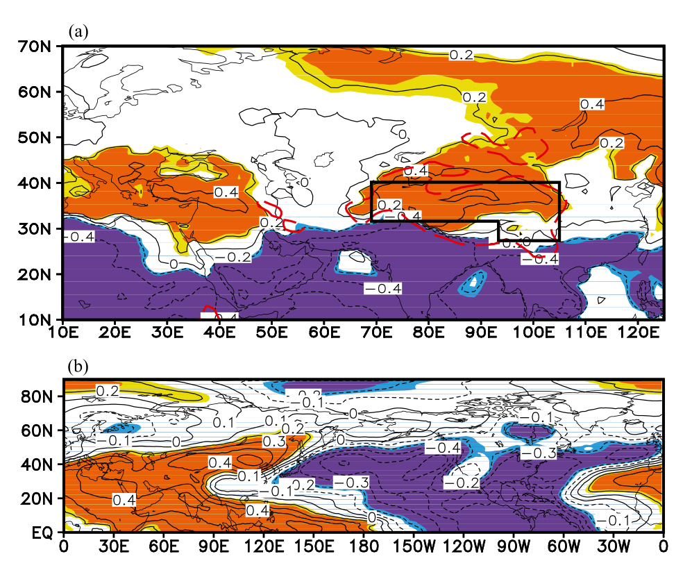
图 5。（a）1871–2005 年夏季 APO 指数与同期 SAT 之间的相关，其中相关分析基于 CCSM4 的 CMIP5 输出结果。
FIG. 5. (a) Correlation between the summer APO index and simultaneous SAT during 1871–2005, in which the correlation is based on the CMIP5 output from CCSM4.
（b）同（a），但为夏季青藏高原热力指数与同期对流层上层 T′ 之间的相关。
(b) As in (a), but for the correlation between the summer TP thermal index and simultaneous upper-tropospheric T′.
黄色和橙色（浅蓝色和深蓝色）阴影分别表示在 95% 和 99% 置信水平上显著的正（负）相关。
Yellow and orange (light and dark blue) shading denotes positive (negative) correlations significant at the 95% and 99% confidence level, respectively.
黑色矩形为青藏高原区域（同图 2a）。
The black rectangle is the TP region (as in Fig. 2a).
该结果表明，CCSM4 能够较好地捕捉观测到的夏季 APO 与青藏高原 SAT 之间的年际关系，进一步支持了这一关系的稳健性。
This result indicates that CCSM4 captures the observed interannual relationship between the summer APO and TP SAT reasonably well, lending further support to the robustness of this relationship.
4. 可能的物理解释4. Possible physical explanation
既往研究表明，青藏高原（TP）加热异常能够影响春、夏季的亚洲—太平洋涛动（APO）异常（Nan et al. 2009; Zhou et al. 2009）。
Previous studies have shown that anomalous TP heating can affect the APO anomalies during spring and summer (Nan et al. 2009; Zhou et al. 2009).
本节详细分析夏季年际时间尺度上青藏高原加热异常影响 APO 所涉及的可能物理过程。
In this section, we analyze in detail the possible physical processes involved in the impact of anomalous TP heating on the APO on the interannual time scale during summer.
a. 观测结果a. Observational results
图 6a 展示了基于 1871—2012 年 NOAA-20C 资料，将垂直环流和 T′ 对夏季青藏高原热力指数回归所得的空间结构。
Figure 6a shows the spatial structure of the regressed vertical circulation and T′ against the summer TP thermal index based on NOAA-20C data over the period 1871–2012.
当夏季青藏高原 SAT 指数偏高（对应较强的青藏高原热力状况）时，亚洲上空对流层温度升高，青藏高原北部及其邻近地区（35°—50°N 之间）出现上升运动异常（见图 6a 沿 85°E 的剖面）。
When the summer TP SAT index is high (corresponding to a stronger TP thermal condition), tropospheric temperature increases over Asia, with upward-motion anomalies over the northern TP and its adjacent areas (between 35° and 50°N) (see the cross section along 85°E in Fig. 6a).
异常上升气流在对流层上层向北运动，随后沿对流层上层西风异常在中高纬度转而向东运动（见图 6a 沿 55°N 的剖面）。
The anomalous upward air moves northward in the upper troposphere and then turns to move eastward at the mid- to high latitudes along anomalous upper-tropospheric westerly winds (see the cross section along 55°N in Fig. 6a).
这些西风异常源自增强的东亚副热带急流向东北延伸，D.-Q. Huang et al. (2014) 已指出这一点。
These anomalous westerly winds derive from a northeastward extension of the strengthened East Asian subtropical jet indicated by D.-Q. Huang et al. (2014).
异常东向气流在 37°N 以北转而向南运动，同时在北太平洋中东部下沉（见图 6a 沿 165°W 的剖面）。
The anomalous eastward airflow turns to move southward to the north of 37°N and, concurrently, descends over the central-eastern North Pacific (see the cross section along 165°W in Fig. 6a).
与此同时，上升运动异常出现在下沉运动异常的南侧。
Meanwhile, anomalous upward motion appears to the south of the anomalous downward motion.
在图 6a 沿 165°W 的剖面中，北太平洋中东部对流层中上层出现负温度异常，与北太平洋中东部高纬（低纬）的下沉（上升）运动异常相对应。
In the cross section along 165°W in Fig. 6a, negative temperature anomalies appear in the mid- and upper troposphere over the central-eastern North Pacific, corresponding to the anomalous downward (upward) motion over the high (low) latitudes of the central-eastern North Pacific.
基于 NCEP 资料也观测到相似特征（图 6b），从而支持了 NOAA-20C 的结果。
Similar features are also observed based on NCEP data (Fig. 6b), thus supporting the result from NOAA-20C.
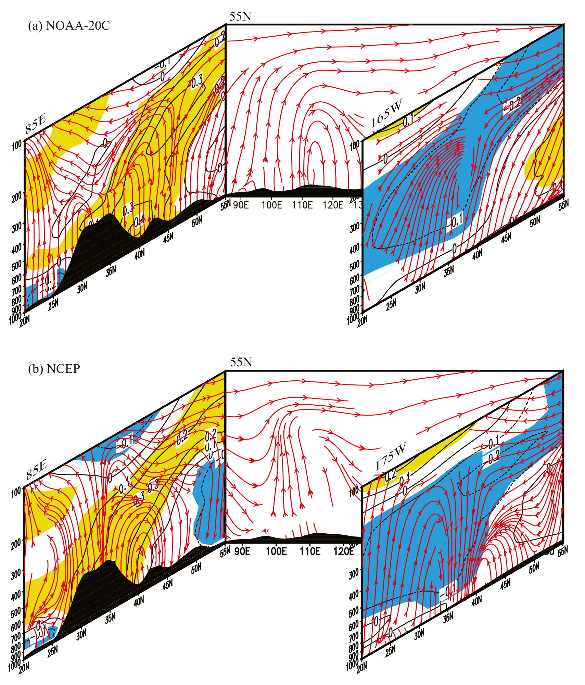
图 6.（a）将垂直环流异常（红色矢量线）和 T′（°C；等值线和阴影）对夏季青藏高原热力指数回归所得的空间结构，其中回归基于 1871—2012 年 NOAA-20C 再分析资料。
FIG. 6. (a) Spatial structure of anomalous vertical circulation (red vector lines) and T′ (°C; contours and shading) obtained by regression against the summer TP thermal index, in which the regression is based on NOAA-20C reanalysis data during 1871–2012.
剖面分别沿 85°E、55°N 和 165°W。
The cross sections are along 85°E, 55°N, and 165°W.
（b）同（a），但资料为 1948—2015 年 NCEP，剖面分别沿 85°E、55°N 和 175°W。
(b) As in (a), but for NCEP during 1948–2015, in which the cross sections are along 85°E, 55°N, and 175°W.
通过 95% 置信水平显著性检验的 T′ 正（负）异常以黄色（蓝色）阴影表示。
Positive (negative) T′ anomalies significant at the 95% confidence level are shaded yellow (blue).
黑色阴影区域表示地形。
The black shaded area denotes the terrain.
因此，青藏高原热力状况的年际变率通过东亚和北太平洋中东部的纬向与垂直环流，同夏季 APO 异常密切关联。
Therefore, the interannual variability of the TP thermal condition is closely associated with the summer APO anomaly through the zonal and vertical circulations over East Asia and the central-eastern North Pacific.
当青藏高原上空对流层温度偏高时，青藏高原北部及邻近地区出现上升运动异常，该异常向北运动，在较高纬度转向东，并在北太平洋中东部中高纬向南下沉，同时北太平洋中东部热带外地区出现对流层负温度异常。
When the tropospheric temperature over the TP is high, anomalous upward motion appears over the northern TP and adjacent regions, moves northward, turns eastward over higher latitudes, and sinks southward over the mid- and high latitudes of the central-eastern North Pacific, with negative tropospheric temperature anomalies over the extratropical central-eastern North Pacific.
然而，是什么物理过程导致如此大范围的负温度异常？
But what physical processes are responsible for the negative temperature anomalies over such a vast area?
下一小节将基于 CCSM3 和 CAM3 模拟给出一种物理解释。
In the following subsection, we reveal a physical explanation based on the CCSM3 and CAM3 simulations.
b. 模式结果b. Model results
本小节利用 CCSM3-Control 和 CCSM3-TP 试验结果，考察夏季 APO 对青藏高原高架热力作用异常的响应及相关物理过程。
In this subsection, we examine the response of the summer APO to an elevated TP heating anomaly and the related physical processes using the results from experiments CCSM3-Control and CCSM3-TP.
图 7a 展示了 CCSM3-Control 与 CCSM3-TP 的 500 hPa 气温合成差（前者减后者）。
Figure 7a shows the composite difference in 500-hPa air temperature between CCSM3-Control and CCSM3-TP (the former minus the latter).
图中，青藏高原区域出现超过 1°C 的 500 hPa 气温正异常，中心值超过 3°C，这表明 CCSM3-TP 中青藏高原地形高度降低会使当地 500 hPa 气温下降（即青藏高原高架热力作用对当地 SAT 的影响）。
In this figure, positive anomalies of 500-hPa air temperature above 1°C appear over the TP region, with a central value exceeding 3°C, which indicates a decrease in the local 500-hPa air temperature with a topographic reduction over the TP in CCSM3-TP (i.e., an effect of elevated heating over the TP on local SAT).
青藏高原及邻近地区对流层上层也出现正温度异常，异常中心位于青藏高原附近（图 7b），这与图 3 所示的观测结果相似。
Positive temperature anomalies also appear in the upper troposphere over the TP and adjacent areas, with central values near the TP (Fig. 7b), which is similar to the observational results shown in Fig. 3.
与此同时，太平洋—大西洋热带外地区出现显著的对流层上层 T′ 负异常。
Meanwhile, significant negative anomalies of upper-tropospheric T′ appear over the Pacific–Atlantic extratropical regions.
图 7b 中的异常型总体呈现类 APO 型。
This anomaly pattern in Fig. 7b generally exhibits an APO-like pattern.
还需注意，东亚高纬度地区出现负异常，这与观测结果（图 3）不一致。
Also of note is that negative anomalies appear over the high latitudes of East Asia, which is inconsistent with the observational result (Fig. 3).
尽管存在这种不一致，模拟中仍可清楚识别出类 APO 型，这表明我们的模式试验具有合理性，也表明青藏高原高架热力作用会影响 APO 型。
Despite this inconsistency, the APO-like pattern can be clearly identified in the simulation, which demonstrates the reasonability of our model experiments and an effect of elevated TP heating on the APO pattern.
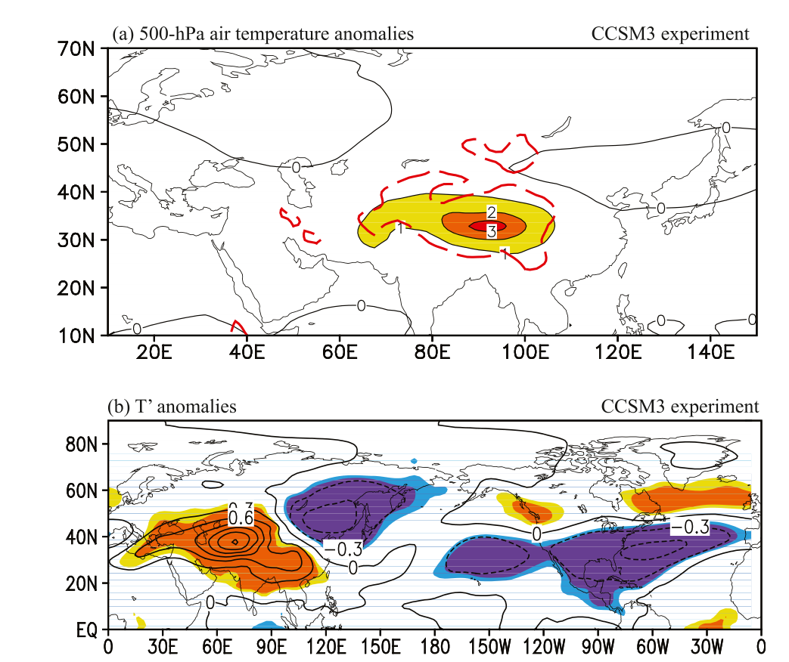
图 7.（a）CCSM3-Control 与 CCSM3-TP 的 500 hPa 气温（°C）合成差（CCSM3-Control 减 CCSM3-TP）。
FIG. 7. (a) Composite difference in 500-hPa air temperature (°C) between CCSM3-Control and CCSM3-TP (CCSM3-Control minus CCSM3-TP).
（b）同（a），但为夏季对流层上层 T′（°C）。
(b) As in (a), but for summer upper-tropospheric T′ (°C).
黄色和橙色（浅蓝色和深蓝色）阴影分别表示通过 95% 和 99% 置信水平显著性检验的正（负）相关。
Yellow and orange (light and dark blue) shading denotes positive (negative) correlations significant at the 95% and 99% confidence level, respectively.
图 8 展示了 CCSM3-Control 与 CCSM3-TP 试验之间垂直环流和 T′ 的合成差。
Figure 8 shows the composite differences in vertical circulation and T′ between the experiments CCSM3-Control and CCSM3-TP.
与青藏高原高架热力作用异常相对应，显著气温正异常从地表向上延伸至青藏高原及其邻近地区的对流层上层，且青藏高原北部存在上升运动异常（见图 8 沿 100°E 的剖面）。
Corresponding to the TP elevated heating anomaly, significant positive anomalies of air temperature extend from the surface to the upper troposphere over the TP and adjacent areas, with upward-motion anomalies over the northern TP (see the cross section along 100°E in Fig. 8).
随后，这些上升运动异常沿 40°N 转向东，并沿 160°W 在北太平洋中东部中纬度（30°N 以北）逐渐向南下沉，同时低纬度（30°N 以南）存在上升运动异常。
These upward-motion anomalies then turn eastward along 40°N and gradually descend southward over the midlatitudes (to the north of 30°N) of the central-eastern North Pacific along 160°W, with upward-motion anomalies over the lower latitudes (to the south of 30°N).
这些异常与图 6 中的观测异常大体相似，但模拟特征整体向南偏移。
The anomalies are broadly similar to the observational ones in Fig. 6, although the simulated features shift systematically southward.
事实上，模拟的垂直环流异常向南偏移，与 CCSM3 结果中 APO 型整体向南偏移（图 7b）十分一致。
Actually, the simulated southward-shifted vertical circulation anomalies are in good agreement with the systematic southward APO pattern in the CCSM3 results (Fig. 7b).
这些结果揭示，图 6 所示与夏季青藏高原热力指数相关的观测垂直环流异常可能是由青藏高原高架热力作用异常强迫形成的。
These results reveal that the observed vertical circulation anomalies associated with the summer TP thermal index, shown in Fig. 6, may be forced by the TP elevated heating anomaly.
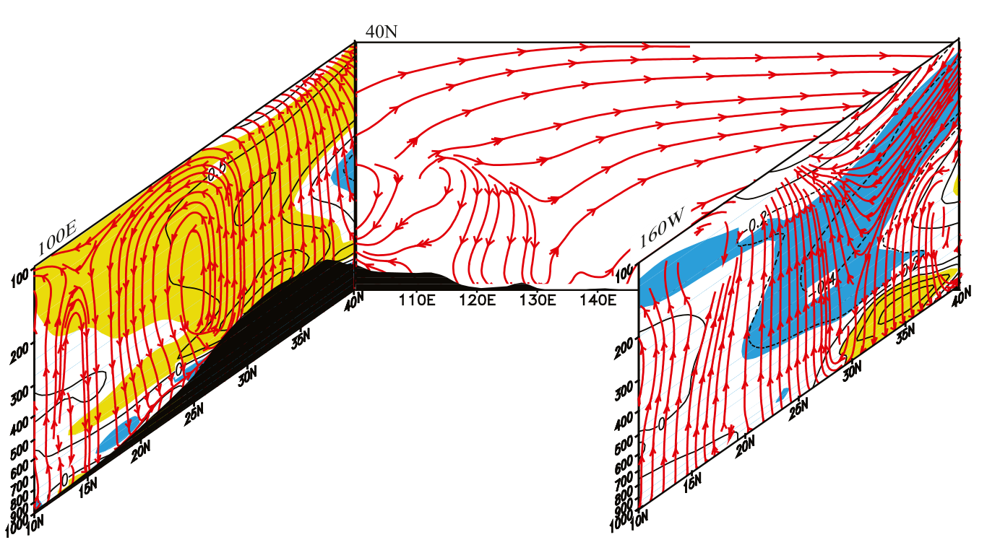
图 8. CCSM3-Control 与 CCSM3-TP 之间垂直环流（红色矢量线）和 T′（°C；等值线和阴影）合成差的空间结构（CCSM3-Control 减 CCSM3-TP）。
FIG. 8. Spatial structure of the composite differences in vertical circulation (red vector lines) and T′ (°C; contours and shading) between CCSM3-Control and CCSM3-TP (CCSM3-Control minus CCSM3-TP).
剖面分别沿 100°E、40°N 和 160°W。
The cross sections are along 100°E, 40°N, and 160°W.
通过 95% 置信水平显著性检验的正（负）值以黄色（蓝色）阴影表示。
Positive (negative) values significant at the 95% confidence level are shaded yellow (blue).
黑色阴影区域表示地形。
The black shaded area denotes the terrain.
需要特别指出的是，降低青藏高原地形高度还会引入机械强迫效应。
It is important to note that the reduction of the TP topography also includes a mechanical forcing effect.
为分离青藏高原热力强迫的单独效应，下面考察 CAM3-Tree 和 CAM3-Bare 的结果。
To isolate the individual effect of TP thermal forcing, we next examine the results from CAM3-Tree and CAM3-Bare.
显然，仅由青藏高原热力强迫也能模拟出相似的异常特征。
It is apparent that similar anomalous features are simulated solely by the TP thermal forcing.
青藏高原上空 500 hPa 层再次出现超过 1°C 的正温度异常（图 9a）。
Positive temperature anomalies above 1°C again appear at the 500-hPa level over the TP (Fig. 9a).
相应地，亚洲大陆上空出现显著的对流层上层 T′ 正异常，而北太平洋热带外地区出现对流层上层 T′ 负异常，这也呈现出类 APO 型（图 9b）。
Correspondingly, significant positive upper-tropospheric T′ anomalies occur over the Asian continent, while negative upper-tropospheric T′ anomalies occur over the extratropical North Pacific, which also exhibits an APO-like pattern (Fig. 9b).
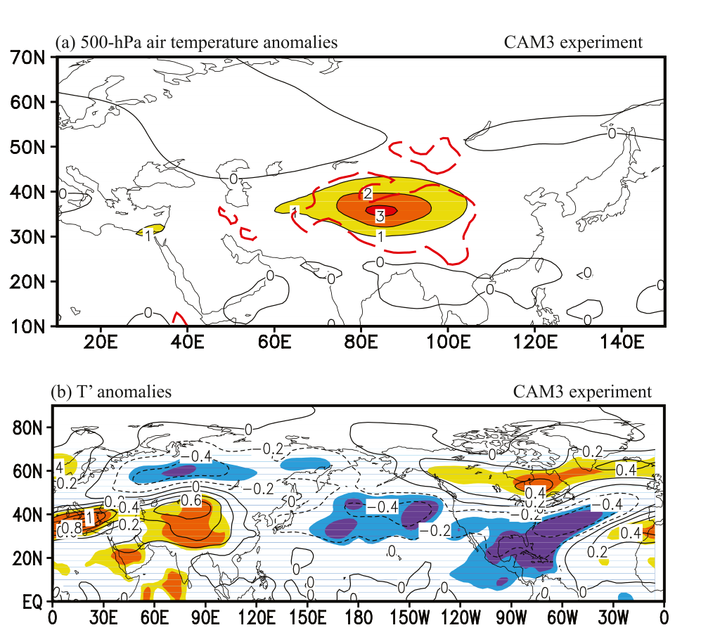
图 9.（a）CAM3-Tree 与 CAM3-Bare 的 500 hPa 气温（°C）合成差（CAM3-Tree 减 CAM3-Bare）。
FIG. 9. (a) Composite difference in 500-hPa air temperature (°C) between CAM3-Tree and CAM3-Bare (CAM3-Tree minus CAM3-Bare).
（b）同（a），但为夏季对流层上层 T′（°C）。
(b) As in (a), but for summer upper-tropospheric T′ (°C).
黄色和橙色（浅蓝色和深蓝色）阴影分别表示通过 95% 和 99% 置信水平显著性检验的正（负）相关。
Yellow and orange (light and dark blue) shading denotes positive (negative) correlations significant at the 95% and 99% confidence level, respectively.
图 10 展示了 CAM3-Tree 与 CAM3-Bare 之间垂直环流和 T′ 的合成差。
Figure 10 shows the composite differences in vertical circulation and T′ between CAM3-Tree and CAM3-Bare.
总体而言，青藏高原—东太平洋地区的对流层温度和垂直环流异常，与 CCSM3 模拟产生的结果（图 8）及观测结果（图 6）相似。
Generally speaking, the tropospheric temperature and vertical circulation anomalies over the TP–eastern Pacific region are similar to those produced by the CCSM3 simulation (Fig. 8) and those observed (Fig. 6).
例如，对流层正、负温度异常分别出现在青藏高原附近和北太平洋热带外地区（图 9b、10），表明存在 APO 型。
For example, positive and negative temperature anomalies in the troposphere appear around the TP and over the extratropical North Pacific, respectively (Figs. 9b and 10), which indicates an APO pattern.
与此同时，上升运动异常出现在青藏高原地区，随后转向东，并在北太平洋中纬度向南下沉（图 10）。
Meanwhile, the upward-motion anomalies appear over the TP region, turn eastward, and descend southward over the midlatitudes of the North Pacific (Fig. 10).
CAM3 与 CCSM3 模拟之间的这种相似性进一步揭示，通过改变青藏高原高架热力作用所模拟的环流变化（图 7、8）可能主要由青藏高原上空单独的热力强迫效应触发，而涉及地形高度变化的机械强迫效应在夏季相对较弱。
This similarity between the CAM3 and CCSM3 simulations further reveals that the atmospheric circulation variations simulated by changing the TP elevated heating (in Figs. 7 and 8) may mainly be triggered by an individual thermal forcing effect over the TP, and that the mechanical forcing effect, involving a change in the topographic height, is relatively weaker during summer.
Liu et al. (2007) 的结论也支持这一点，他们指出夏季青藏高原的动力作用明显弱于其热力作用。
This is also supported by the conclusion of Liu et al. (2007), who showed that the TP’s dynamic function is evidently weaker than its thermal function during summer.
因此，CCSM3 模拟成功再现了观测到的青藏高原热力状况对 APO 的影响。
Thus, the CCSM3 simulations successfully reproduce the observed effect of the TP’s thermal condition on the APO.
在接下来的分析中，我们考察夏季青藏高原高架热力作用异常影响 APO 的内在机制。
In the following analysis, we examine the mechanism underlying the impact of the TP elevated heating anomaly on the APO during summer.
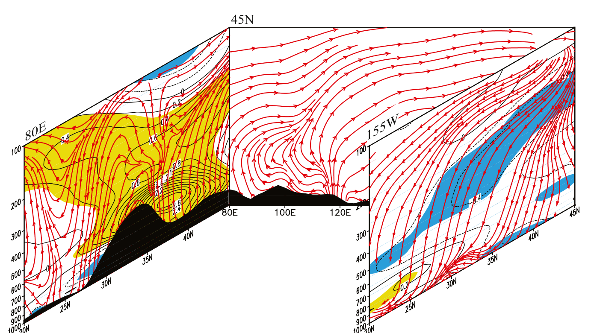
图 10. CAM3-Tree 与 CAM3-Bare 之间垂直环流（红色矢量线）和 T′（°C；等值线和阴影）合成差的空间结构（CAM3-Tree 减 CAM3-Bare）。
FIG. 10. Spatial structure of the composite differences in vertical circulation (red vector lines) and T′ (°C; contours and shading) between CAM3-Tree and CAM3-Bare (CAM3-Tree minus CAM3-Bare).
剖面分别沿 80°E、45°N 和 155°W。
The cross sections are along 80°E, 45°N, and 155°W.
通过 95% 置信水平显著性检验的正（负）值以黄色（蓝色）阴影表示。
Positive (negative) values significant at the 95% confidence level are shaded yellow (blue).
黑色阴影区域表示地形。
The black shaded area denotes the terrain.
在北太平洋中东部中纬度，下沉运动异常可能使当地对流性降水和降水产生的凝结潜热减少。
Over the midlatitudes of the central-eastern North Pacific, the downward-motion anomalies may cause a reduction in local convective rainfall and condensation latent heat produced by precipitation.
图 11a 给出了这种潜热减少的证据。
Figure 11a shows evidence of this reduced latent heat.
在这些纬度，大气吸收的长波和短波净辐射以及地表感热（图略）相对于潜热都较小。
The net longwave and shortwave radiation absorbed by the atmosphere and the sensible heat at the surface (figure not shown) are smaller relative to the latent heat over these latitudes.
因此，主要由于潜热减少，北太平洋中东部中纬度的大气视热源⟨Q1⟩显著减弱（图 11b 上方红框），其中⟨Q1⟩定义为地表感热、短波和长波净辐射以及凝结潜热之和。
As such, mainly owing to the decrease in the latent heat, the atmospheric apparent heat source ⟨Q1⟩ significantly weakens over the midlatitudes of the central-eastern North Pacific (upper red box in Fig. 11b), in which ⟨Q1⟩ is defined as the sum of surface sensible heat, shortwave and longwave net radiation, and condensation latent heat.
这种减弱的⟨Q1⟩可能有利于降低当地对流层温度。
This weakened ⟨Q1⟩ may be conducive to a lowering of local tropospheric temperature.
另一种观点可能认为，下沉运动异常可能会通过干绝热加热使当地对流层温度升高。
One may argue that, alternatively, the downward-motion anomalies might cause an increase in the local tropospheric temperature via dry adiabatic heating.
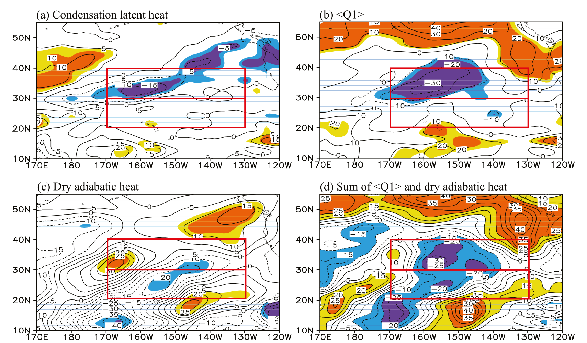
图 11. CCSM3-Control 与 CCSM3-TP 之间（a）凝结潜热、（b）大气视热源（⟨Q1⟩）、（c）500—100 hPa 之间的干绝热加热，以及（d）⟨Q1⟩与干绝热加热之和（W m−2）的合成差（CCSM3-Control 减 CCSM3-TP）。
FIG. 11. Composite differences in (a) condensation latent heat, (b) atmospheric apparent heat source (⟨Q1⟩), (c) dry adiabatic heat between 500 and 100 hPa, and (d) the sum of ⟨Q1⟩ and dry adiabatic heat (W m−2) between CCSM3-Control and CCSM3-TP (CCSM3-Control minus CCSM3-TP).
黄色和橙色（浅蓝色和深蓝色）阴影在（a）—（c）中分别表示通过 95% 和 99% 置信水平显著性检验的正（负）值；在（d）中，黄色和橙色阴影分别表示大于 10 和 20 W m−2 的正值，浅蓝色和深蓝色阴影分别表示小于 −10 和 −20 W m−2 的负值。
Yellow and orange (light and dark blue) shading denotes positive (negative) values significant at the 95% and 99% confidence level in (a)–(c) but indicates positive (negative) values greater (smaller) than 10 and 20 W m−2 (−10 and −20 W m−2) in (d).
上、下红框分别表示 APO 北太平洋关键区的中纬度（30°—40°N，170°—130°W）和低纬度（20°—30°N，170°—130°W）部分。
The upper and lower red boxes indicate the mid- (30°–40°N, 170°–130°W) and lower (20°–30°N, 170°–130°W) latitudes of the North Pacific key region of the APO, respectively.
图 11c 展示了 CCSM3-Control 与 CCSM3-TP 之间干绝热加热的合成差。
Figure 11c shows the composite difference in dry adiabatic heat between CCSM3-Control and CCSM3-TP.
可以看出，仅在 30°N、170°W 附近很小的区域内存在显著的干绝热加热正异常，而 APO 北太平洋扇区的北部关键区（30°—40°N，170°—130°W；图 11c 上方红框）则出现大范围干绝热加热负异常。
As can be seen, there is only a very small area with significant positive anomalies of dry adiabatic heat, near 30°N, 170°W, while large-scale negative anomalies of dry adiabatic heat appear over the northern key area of the APO’s North Pacific sector (30°–40°N, 170°–130°W; upper red box in Fig. 11c).
因此，该扇区内干绝热加热与⟨Q1⟩之和存在明显负异常（图 11d）；显然，下沉运动异常所致的干绝热加热增加无法抵消当地⟨Q1⟩的减少。
Therefore, there are clear negative anomalies in the sum of dry adiabatic heat and ⟨Q1⟩ over this sector (Fig. 11d) and, evidently, the increase in dry adiabatic heat caused by the downward-motion anomalies does not balance the decrease in the local ⟨Q1⟩.
因此，由青藏高原高架热力作用强迫产生的下沉运动异常总体上会降低北太平洋中东部中纬度地区的对流层上层大气温度。
Therefore, the downward-motion anomalies forced by the TP elevated heating generally cause a decrease in the upper-tropospheric atmospheric temperature over the midlatitudes of the central-eastern North Pacific.
在北太平洋中东部低纬度，与上升运动异常相对应，干绝热加热为负值（图 11c）。
Over the lower latitudes of the central-eastern North Pacific, corresponding to the upward-motion anomalies, there are negative values of dry adiabatic heat (Fig. 11c).
尽管上升运动异常也会增强当地对流活动，并在一定程度上增大当地⟨Q1⟩（图 11b），但⟨Q1⟩正异常较弱（不显著）。
Although the upward-motion anomalies also strengthen local convective activity and increase the local ⟨Q1⟩ to some extent (Fig. 11b), the positive anomalies of ⟨Q1⟩ are weak (nonsignificant).
由于⟨Q1⟩正异常无法抵消上升运动异常引起的干绝热加热减少，因此在 APO 北太平洋扇区的南部关键区（20°—30°N，170°—130°W；图 11d 下方红框），干绝热加热与⟨Q1⟩之和仍为负值。
Because the positive anomalies of ⟨Q1⟩ cannot balance the reduction in dry adiabatic heat caused by the upward-motion anomalies, the sum of dry adiabatic heat and ⟨Q1⟩ is still negative over the southern key area of the APO’s North Pacific sector (20°–30°N, 170°–130°W; lower red box in Fig. 11d).
因此，北太平洋中东部低纬度的上升运动异常也会降低当地对流层温度。
Thus, the upward-motion anomalies over the lower latitudes of the central-eastern North Pacific also lower the tropospheric temperature in situ.
5. 总结与讨论5. Summary and discussion
本研究利用 NOAA-20C 和 ERA-20C 再分析资料，考察了年际时间尺度上夏季 APO 的变率及其与青藏高原热力状况的关系。
In the present study, using NOAA-20C and ERA-20C reanalysis data, we investigate the variability of the summer APO and its relationship with the thermal condition of the TP on the interannual time scale.
结果表明，夏季 APO 的年际变化与青藏高原夏季 SAT 显著相关，且这种关系在过去 100 年间保持稳定。
The results show that the interannual variation of the summer APO correlates significantly with the TP’s SAT in summer, and that this relationship is stable during the past 100 years.
NCEP 再分析资料和 CMIP5 模式输出也支持这种关系。
The relationship is also supported by NCEP reanalysis data and by CMIP5 model output.
观测与模拟结果揭示，青藏高原热力状况和 APO 之间的关系反映了前者对后者的影响。
Observation and simulation results reveal that the relationship between the TP thermal condition and the APO reflects an impact of the former on the latter.
夏季，青藏高原加热增强可使欧亚大陆上空对流层中上层温度升高，并加强青藏高原北部及邻近地区的上升运动。
During summer, the strengthened heating over the TP can raise the mid- and upper-tropospheric temperature over Eurasia and strengthen the upward motion over the northern TP and adjacent areas.
这一异常上升气流转向东，随后在北太平洋中东部中高纬向南下沉，同时北太平洋中东部低纬度伴随有上升运动异常。
This anomalous upward flow turns eastward and then sinks southward over the mid- and high latitudes of the central-eastern North Pacific, accompanied by upward-motion anomalies over the lower latitudes of the central-eastern North Pacific.
中高纬度的下沉运动异常主要通过削弱降水凝结潜热并进而削弱大气视热源⟨Q1⟩，降低当地对流层中上层温度。
The downward-motion anomalies over the mid- and high latitudes lower the in situ mid- and upper-tropospheric temperature, mainly through weakening the condensation latent heat from precipitation and, hence, the atmospheric apparent heat source ⟨Q1⟩.
与此同时，低纬度的上升运动异常主要通过上升气团膨胀产生的干绝热冷却，降低当地对流层中上层温度。
Meanwhile, the upward-motion anomalies over the lower latitudes reduce the in situ mid- and upper-tropospheric temperature, mainly through dry adiabatic cooling from the expansion of rising air masses.
相应地，北太平洋中东部对流层中上层出现负温度异常，从而形成 APO 型。
Accordingly, negative temperature anomalies appear in the mid- and upper troposphere over the central-eastern North Pacific, which leads to the APO pattern.
在这一过程中，亚洲—北太平洋扇区的纬向垂直环流发挥“桥梁”作用，将青藏高原气候与北太平洋大气环流联系起来。
In this process, the zonal vertical circulations over the Asian–North Pacific sector act as a “bridge” linking the TP climate with the North Pacific atmospheric circulation.
此外，夏季在调节亚洲—太平洋气候变化方面，青藏高原的热力强迫比动力强迫发挥更重要的作用。
Moreover, during summer, the TP’s thermal forcing, rather than its dynamic forcing, plays the more important role in modulating the variation of the summer Asian–Pacific climate.
本研究强调了青藏高原热力状况对夏季 APO 年际变率的重要性。
In this study, we emphasize the importance of the TP thermal condition to the interannual variability of the summer APO.
然而，哪些因素导致青藏高原热力状况在年际时间尺度上的变化，仍不清楚。
However, it remains unclear what factors are responsible for the variation of the thermal condition of the TP on the interannual time scale.
既往研究记录了青藏高原积雪覆盖对当地大气温度的影响（Zhao et al. 2007; Liu et al. 2014a,b），以及前一冬季热带太平洋中东部 SST 异常对随后夏季青藏高原温度的影响（Zhao et al. 2009; Liu et al. 2015）。
Previous studies have documented the effects of snow cover over the TP on the local atmospheric temperature (Zhao et al. 2007; Liu et al. 2014a,b), and the effects of the previous winter’s SST anomaly in the tropical central-eastern Pacific on the subsequent summer TP temperature (Zhao et al. 2009; Liu et al. 2015).
未来工作中，我们拟进一步研究青藏高原积雪覆盖和北太平洋 SST 对夏季 APO 变率的潜在影响。
We intend to further investigate the potential effects of snow cover over the TP, and the North Pacific SST, on the variability of the summer APO in future work.
致谢Acknowledgments
本研究由国家自然科学基金（项目 91437218、41375090、41221064 和 91637312）、国家重点基础研究发展计划（项目 2014CB953904）和中国气象局专项（项目 GYHY201406001）共同资助。
This work was jointly sponsored by the National Science Foundation of China (Grants 91437218, 41375090, 41221064, and 91637312), the National Basic Research Program of China (Grant 2014CB953904), and the Special Project of the China Meteorological Administration (Grant GYHY201406001).
GL 和 JC 还得到中国气象科学研究院基本科研业务费（项目 2015Z001 和 2017Z013）的资助。
GL and JC were also supported by the Basic Research Fund of the Chinese Academy of Meteorological Sciences (Grants 2015Z001 and 2017Z013).